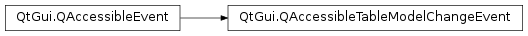

QAccessibleTableModelChangeEvent¶
Synopsis¶
Functions¶
- def
firstColumn() - def
firstRow() - def
lastColumn() - def
lastRow() - def
modelChangeType() - def
setFirstColumn(col) - def
setFirstRow(row) - def
setLastColumn(col) - def
setLastRow(row) - def
setModelChangeType(changeType)
Detailed Description¶
The
PySide2.QtGui.QAccessibleTableModelChangeEventsignifies a change in a table, list, or tree where cells are added or removed. If the change affected a number of rows,PySide2.QtGui.QAccessibleTableModelChangeEvent.firstColumn()andPySide2.QtGui.QAccessibleTableModelChangeEvent.lastColumn()will return -1. Likewise for columns, the row functions may return -1.This class is used with
QAccessible.updateAccessibility().
-
class
PySide2.QtGui.QAccessibleTableModelChangeEvent(iface, changeType)¶ -
class
PySide2.QtGui.QAccessibleTableModelChangeEvent(obj, changeType) Parameters: Constructs a new
PySide2.QtGui.QAccessibleTableModelChangeEventfor interfaceifacewith a model change typechangeType.Constructs a new
PySide2.QtGui.QAccessibleTableModelChangeEventforobjectof withchangeType.
-
PySide2.QtGui.QAccessibleTableModelChangeEvent.ModelChangeType¶ This enum describes the different types of changes in the table model.
Constant Description QAccessibleTableModelChangeEvent.ModelReset The model has been reset, all previous knowledge about the model is now invalid. QAccessibleTableModelChangeEvent.DataChanged No cells have been added or removed, but the data of the specified cell range is invalid. QAccessibleTableModelChangeEvent.RowsInserted New rows have been inserted. QAccessibleTableModelChangeEvent.ColumnsInserted New columns have been inserted. QAccessibleTableModelChangeEvent.RowsRemoved Rows have been removed. QAccessibleTableModelChangeEvent.ColumnsRemoved Columns have been removed.
-
PySide2.QtGui.QAccessibleTableModelChangeEvent.firstColumn()¶ Return type: PySide2.QtCore.intReturns the first changed column.
-
PySide2.QtGui.QAccessibleTableModelChangeEvent.firstRow()¶ Return type: PySide2.QtCore.intReturns the first changed row.
-
PySide2.QtGui.QAccessibleTableModelChangeEvent.lastColumn()¶ Return type: PySide2.QtCore.intReturns the last changed column.
-
PySide2.QtGui.QAccessibleTableModelChangeEvent.lastRow()¶ Return type: PySide2.QtCore.intReturns the last changed row.
-
PySide2.QtGui.QAccessibleTableModelChangeEvent.modelChangeType()¶ Return type: PySide2.QtGui.QAccessibleTableModelChangeEvent.ModelChangeTypeReturns the type of change.
-
PySide2.QtGui.QAccessibleTableModelChangeEvent.setFirstColumn(col)¶ Parameters: col – PySide2.QtCore.intSets the first changed
column.
-
PySide2.QtGui.QAccessibleTableModelChangeEvent.setFirstRow(row)¶ Parameters: row – PySide2.QtCore.intSets the first changed
row.
-
PySide2.QtGui.QAccessibleTableModelChangeEvent.setLastColumn(col)¶ Parameters: col – PySide2.QtCore.intSets the last changed
column.
-
PySide2.QtGui.QAccessibleTableModelChangeEvent.setLastRow(row)¶ Parameters: row – PySide2.QtCore.intSets the last changed
row.
-
PySide2.QtGui.QAccessibleTableModelChangeEvent.setModelChangeType(changeType)¶ Parameters: changeType – PySide2.QtGui.QAccessibleTableModelChangeEvent.ModelChangeTypeSets the type of change to
changeType.
© 2018 The Qt Company Ltd. Documentation contributions included herein are the copyrights of their respective owners. The documentation provided herein is licensed under the terms of the GNU Free Documentation License version 1.3 as published by the Free Software Foundation. Qt and respective logos are trademarks of The Qt Company Ltd. in Finland and/or other countries worldwide. All other trademarks are property of their respective owners.